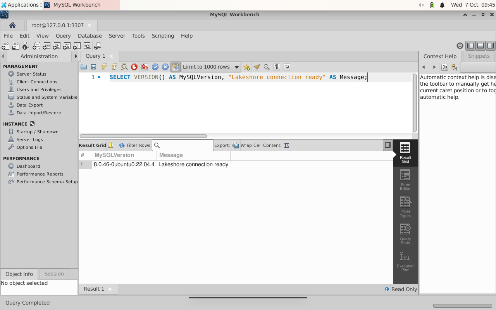
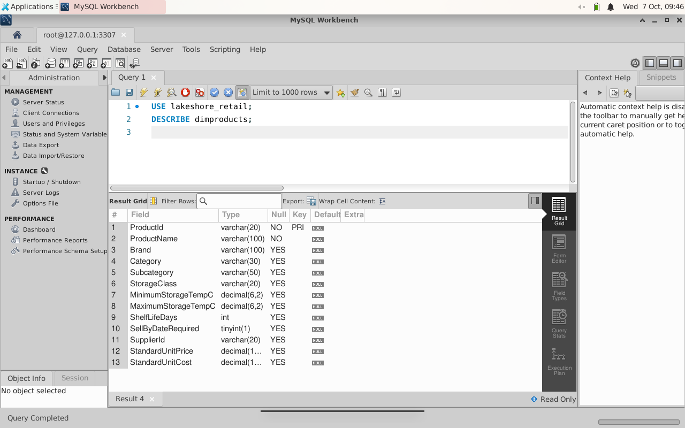
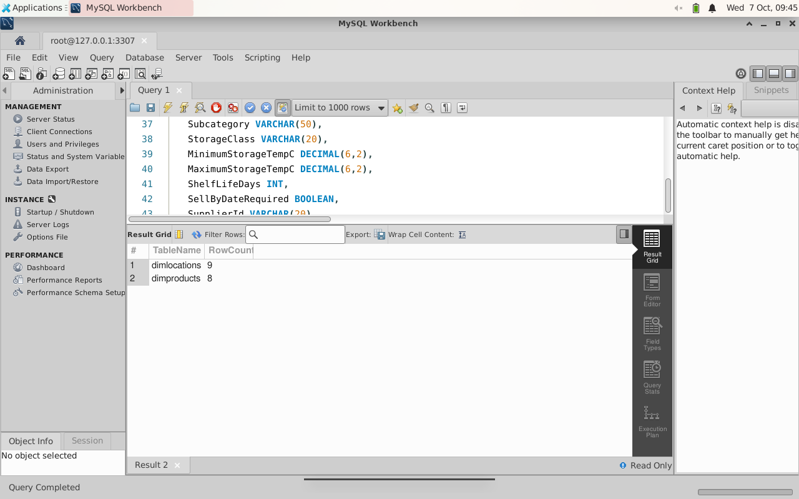
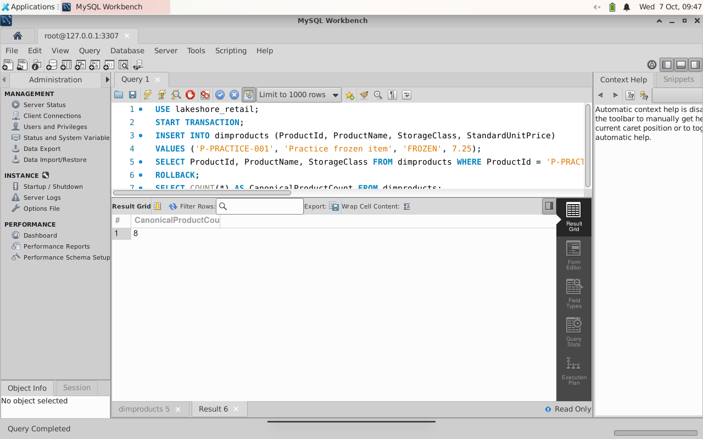
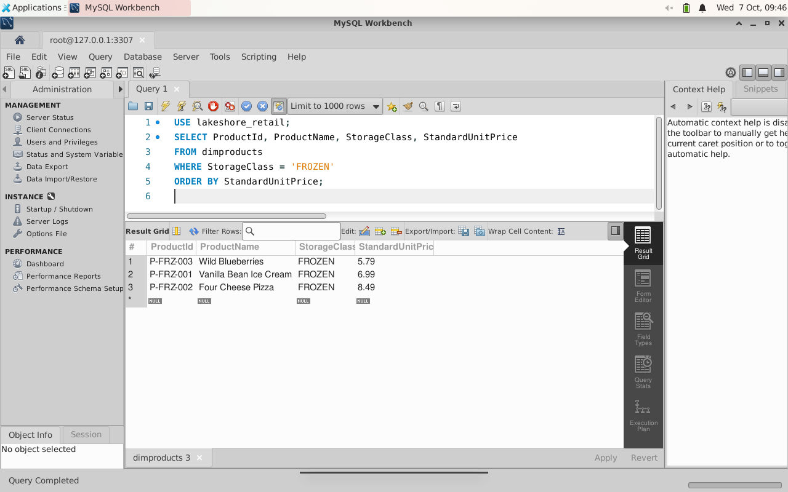

Assignment 1: Assess and build the Lakeshore Retail database in MySQL
Assignment 1: MySQL · Assignment 2: OneLake · Assignment 3: Inventory · Assignment 4: Semantic lifecycle · Assignment 5: Ontology
Lakeshore Retail operates stores, distribution centers and refrigerated supply chains. Its team needs reliable product and location records before it can investigate low stock, cold-chain exceptions and replenishment delays. You will write a database readiness report, then build and query the first two operational tables in MySQL Workbench.
This is Assignment 1 of a five-assignment business scenario: database foundations to OneLake and lakehouse ingestion to dimensional modeling and dataflows to semantic model validation and deployment to ontology and business questions. Use the same supplied Lakeshore data throughout. Approximate study time: 4–5 hours, with breaks between parts.
Part 1: Assess database readiness
Understand the business problem
Lakeshore currently receives product catalogs, location spreadsheets, shipment files and refrigeration readings from several teams. Assume for this readiness discussion that copies of these files are edited independently, names are repeated instead of stable identifiers, and updated prices do not reach every team. These are teaching assumptions, not defects introduced into the supplied sample files.
- Describe a duplication problem, an inconsistent-value problem and an update problem that independent spreadsheets can cause. Give one consequence for stock or cold-chain decisions.
- Explain why a product sold at many stores is hard to manage in one flat spreadsheet. Distinguish a product record from a store-product inventory position.
- Explain why searches and access control become harder as the business grows.
Classify data and choose storage
For each item below, classify its structure and give a reason. Separate the business meaning of data from the file format used to transport it.
| Item | Your classification and reason |
|---|---|
| Product CSV with fixed columns | Structured: fixed fields and rows. Explain your reasoning. |
| Location CSV, shipment CSV and inventory snapshot CSV | Complete your classification. |
| Refrigeration readings with Timestamp, UnitId and TemperatureC | Complete your classification; time-series data can still be structured. |
| A hypothetical JSON maintenance message with optional fields | Complete your classification. This is not an extra required sample file. |
| A hypothetical equipment photo, free-text incident note and voice memo | Classify each. These are discussion examples, not uploads. |
- Recommend relational storage for product/location identifiers and relationships. Explain one reason another storage approach might suit the photo or variable maintenance message.
- Name MySQL as the relational DBMS used here. Give one non-relational DBMS example from your course material.
- For accuracy, access control, concurrent users, searching and backup/recovery, write one concrete benefit of a DBMS for Lakeshore. Explain why a backup still needs an operational plan.
Design one table in words
Choose Product or Location. List columns, what they store, plausible data types, a primary key and the reason it must be unique. No diagram is required. Compare your proposal with the sample headers in Part 2. Use ProductId or LocationId, not a mutable display name, as the identifier.
Checkpoint: Your readiness report covers file-management risks, data classification, database choice, DBMS responsibilities and one table design.
Part 2: Prepare MySQL Workbench
You need MySQL Server and MySQL Workbench. Workbench is the client; installing it alone does not create a running server. Use the course machine or an instructor-approved local installation. Do not connect these exercises to a production database.
- Download the appropriate MySQL Community Server and Workbench packages from the official MySQL downloads. Follow MySQL Server installation and Workbench installation for Windows, or the matching platform documentation. On a managed computer, ask the administrator to install the software; do not bypass device controls.
- Configure a local server with the port and credentials approved by your instructor. Keep the password private. Default local port is commonly 3306; use the actual port configured on your machine.
- Open Workbench. Select the + beside MySQL Connections. Set a connection name such as Lakeshore Local, use Standard TCP/IP with hostname
127.0.0.1, your server port and your authorized username. Select Test Connection, enter the password when prompted, then save. - Open the connection and a new SQL tab. Run the confidence check below using the lightning-bolt Execute control. Workbench's execute-all shortcut on the verified Linux UI is Ctrl+Shift+Enter; shortcuts can differ on other platforms.
SELECT VERSION() AS MySQLVersion, 'Lakeshore connection ready' AS Message;
The screenshots are from a real Linux Workbench 8.0.33 session with MySQL Server 8.0.46. Window arrangement and installer screens vary by operating system. No Fabric capacity or cloud account is required for this assignment.
Part 3: Create and populate the operational tables
Use the canonical samples
Download dimlocations.csv and dimproducts.csv. They are two of the same eight inputs used in Assignment 5. Keep their headers, identifiers and values unchanged. Location contains both stores and distribution centers.
- Create the
lakeshore_retaildatabase and select it. If that name already contains unrelated work, choose a dedicated name and use it consistently. Do not drop existing tables. - Create the two tables below. Compare their fields and keys with your written design. MySQL displays BOOLEAN as
tinyint(1); this is expected.
CREATE DATABASE IF NOT EXISTS lakeshore_retail;
USE lakeshore_retail;CREATE TABLE dimlocations (
LocationId VARCHAR(20) PRIMARY KEY,
LocationType VARCHAR(10) NOT NULL,
Name VARCHAR(100) NOT NULL,
Region VARCHAR(20),
City VARCHAR(60),
StateProvince VARCHAR(10),
Country VARCHAR(10),
PriorityTier VARCHAR(10),
OperatingStatus VARCHAR(10),
SellingAreaSqFt INT,
StorageCapacityPallets INT,
Latitude DECIMAL(10,6),
Longitude DECIMAL(10,6)
);
CREATE TABLE dimproducts (
ProductId VARCHAR(20) PRIMARY KEY,
ProductName VARCHAR(100) NOT NULL,
Brand VARCHAR(100),
Category VARCHAR(30),
Subcategory VARCHAR(50),
StorageClass VARCHAR(20),
MinimumStorageTempC DECIMAL(6,2),
MaximumStorageTempC DECIMAL(6,2),
ShelfLifeDays INT,
SellByDateRequired BOOLEAN,
SupplierId VARCHAR(20),
StandardUnitPrice DECIMAL(10,2),
StandardUnitCost DECIMAL(10,2)
);
For a full reproducible setup, download lakeshore-mysql-setup.sql. It includes these CREATE statements and explicit INSERT statements for all 9 locations and 8 products, generated directly from the canonical CSVs. Open it with File > Open SQL Script or the SQL editor's folder icon. Inspect it before running. If you already ran the CREATE statements, execute only its INSERT sections, not the entire setup again. If a table already has data, compare counts and do not reinsert duplicate identifiers.
- Run the INSERT statements and inspect the result. They preserve empty temperature values as SQL NULL and booleans as TRUE/FALSE.
- Run
DESCRIBE dimlocations;andDESCRIBE dimproducts;. Confirm LocationId and ProductId respectively show PRI. - Run the row-count query below. Confirm 9 locations and 8 products. Explain why 9 locations does not mean 9 stores.

SELECT 'dimlocations' AS TableName, COUNT(*) AS RowCount FROM dimlocations
UNION ALL SELECT 'dimproducts', COUNT(*) FROM dimproducts;
Practise INSERT without changing the shared sample
The original practical asks you to add a row. Use a transaction for a clearly labeled practice row, then roll it back so the canonical product count stays 8 for later assignments. Run the whole block in one connection. Do not add invented products to the source CSV.
START TRANSACTION;
INSERT INTO dimproducts (ProductId, ProductName, StorageClass, StandardUnitPrice)
VALUES ('P-PRACTICE-001', 'Practice frozen item', 'FROZEN', 7.25);
SELECT ProductId, ProductName FROM dimproducts WHERE ProductId = 'P-PRACTICE-001';
ROLLBACK;
SELECT COUNT(*) AS CanonicalProductCount FROM dimproducts;
Checkpoint: Two tables exist with defined primary keys, correct source rows and a rolled-back practice INSERT. Save your SQL script and results.
Part 4: Answer business questions with SQL
For each query, record the SQL, the result and one sentence explaining its business meaning. First try writing it yourself, then compare with the downloadable query-check script.
| Operator | Business question | Verified check |
|---|---|---|
| WHERE | Which products need frozen storage? | 3 products |
| ORDER BY | List stores alphabetically by Name, excluding distribution centers. | 6 stores |
| LIKE | Which product names contain Cheese? | Four Cheese Pizza, 1 row |
| IN | Which products are FROZEN or PERISHABLE? | 5 rows |
| BETWEEN | Which standard unit prices are between 4 and 8 inclusive? | 5 rows |
| DISTINCT | Which StorageClass values occur? | AMBIENT, FROZEN, PERISHABLE |
| IS NOT NULL | Which products have SupplierId assigned? | 8 rows |
| COUNT | How many locations have LocationType = STORE? | 6 |
SELECT ProductId, ProductName, StorageClass, StandardUnitPrice
FROM dimproducts
WHERE StorageClass = 'FROZEN'
ORDER BY StandardUnitPrice;
Explain why IS NOT NULL differs from an empty string, why BETWEEN includes its endpoints, and why comparing product names is less reliable than using stable identifiers.
Checkpoint: All eight query types return the checks above. The complete query script was executed against the loaded MySQL sample. Your task is to explain the results, not copy reference screenshots.
Part 5: Submit and prepare the Fabric handoff
- Submit your written readiness report and column design.
- Submit your schema/INSERT SQL, the rolled-back practice INSERT and your eight queries with results and explanations.
- Include screenshots of your successful connection query, DESCRIBE output and frozen-products query. Keep your passwords and unrelated data out of screenshots.
- Keep the two canonical CSVs unchanged. Assignment 2 moves the same product/location records plus four additional operational CSVs into OneLake. It uses the supplied CSVs, not a new invented sales dataset and not an automatic connection to this local MySQL server.
- Keep your dedicated local database for review. Do not delete resources unless separately instructed.
Progression handoff
You have established identifiers, types and reliable queries. Next, use the same scenario in Assignment 2 to discover governed data, load Delta tables and compare original tables with OneLake shortcuts. Later assignments build an inventory star model and a validated semantic model. Assignment 5 adds operational meaning and the ontology agent.
Source and verification notes
This exercise combines the supplied IU1 Database Readiness Report and IU2 MySQL practical, replacing GreenLeaf records with the canonical Lakeshore product/location files. It retains the written reasoning and MySQL schema, INSERT, DESCRIBE and SELECT learning outcomes. Tested October 7, 2026: actual Workbench connection, table creation/INSERT, DESCRIBE, practice transaction and SQL checks. Installation on a learner's Windows machine is not independently verified by these Linux screenshots; follow the official platform-specific installer documentation.